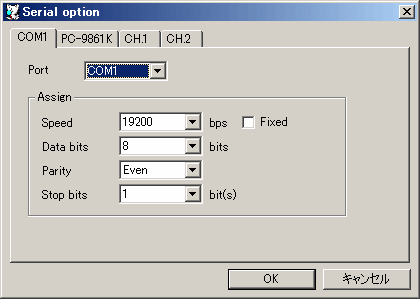
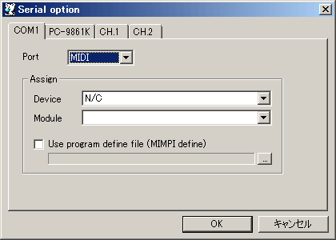
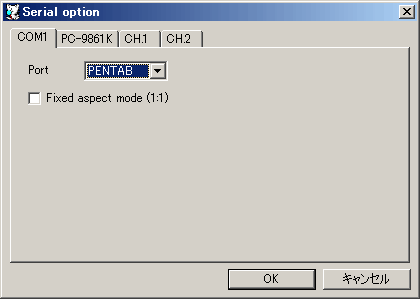
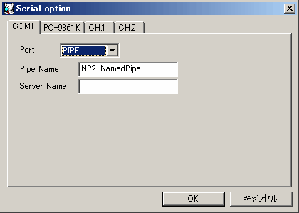

接続デバイスを選択します。
この設定ではホストのシリアルポート(COM1〜COM4)に直接接続します。
Windows-デバイス間の通信速度を指定します。
14.4kbps以上のモデムの場合には、エミュレーション中の設定以上の通信速度を、
それ以外のシリアルデバイスが接続されている場合には、エミュレーション中の設定と同じ通信速度を指定し、Char size, Parity, Stop bitも同様に指定してください。
通信を行なうキャラクタサイズを指定します。
通信のパリティを指定します。
通信のストップビット長を指定します。
チェックするとWindows-デバイス間の通信設定を固定にします。チェックを外すとWindows-デバイス間の通信設定をエミュレータ-Windows間の通信設定に可能な限り合わせます。この設定はPC-9861Kではサポートされていません（常に固定になります）。

この設定ではホストOSのMIDIデバイスをシリアル接続されたMIDIデバイスとしてエミュレーションします。
使用するMIDIデバイスを指定します。
| Device | 対応するMIDIデバイス |
|---|---|
| N/C | 未接続状態になります。 |
| MIDI MAPPER | WindowsのデフォルトMIDIデバイスを使用します。 |
| VERMOUTH | MIDI再生にVermouthを使用します。 |
| MIDIデバイス名 | 指定した MIDIデバイスを使用します。 |
Windowsに接続しているMIDI音源を指定します。
この指定は、エミュレーションリセット・終了・MIDI Panicに置いて MIDI音源をリセットするために使用されます。
MIMPI DEFファイルを指定して、音色番号の振り替えを行ないます。
この機能により音色番号が異なる音源間で音色を合せる事ができます。

この設定ではホストOSのペンタブレットをシリアル接続されたペンタブレット(ArtPad II)としてエミュレーションします。
ホストに接続されているペンタブの操作領域のアスペクト比を、ArtPad IIの操作領域のアスペクト比に合わせます。

この設定ではホストOSの名前付きパイプをシリアルポートとしてエミュレーションします。名前付きパイプに対応している他のアプリケーションと通信を行うことが出来ます。
使用するパイプ名は \\<Server Name>\pipe\<Pipe Name> となります。
使用するパイプの名前を指定します。
接続先パイプのあるコンピュータ名（IPアドレスも可）を指定します。ピリオド「.」を指定した場合はローカルでのみ有効なパイプが作成されます。